February 16, 1936
The elections are held for the Spanish Parlament. The "Popular front" wins them.

July 17, 1936
The start of military rebellion against the Spanish government, first in North Africa, then in Spain
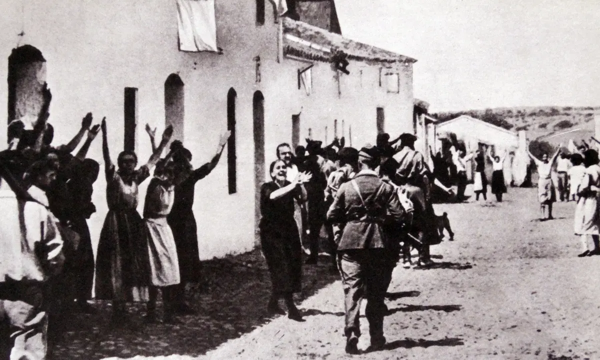
July 19, 1936
Spain is divided. The military uprising is deafeated in Madrid and in Barcelona. Morocco, Galicia, Navarre, Old Castile, and Sevilla also come under the power of the rebels. The leader of the coup (bang) is killed when his plane carrying him from Portugal to Spain crashed
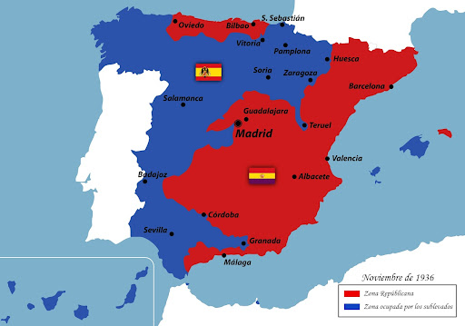
July 21, 1936
The nationalist raided Alcazar, being occupied by the republicans, and being that one of the biggest wins for the Nationalists in the war

September 4, 1936
Caballero becomes the republicans prime minister.
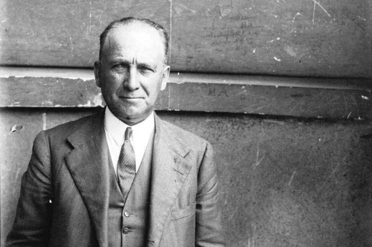
February 6, 1937
The start of the battle of Jarama. The nationalists made this offensive moove to try and cross the river Jarama, in the east of Madrid
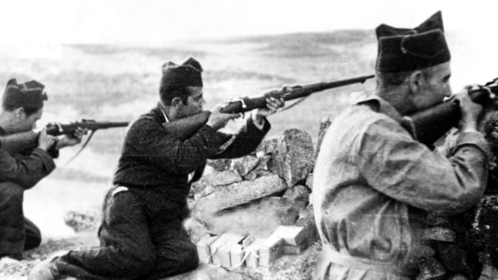
April 6, 1937
Nationalists announce the naval block of the ports of the republicans. They would threatened the boats of the repulicans if they try to sail
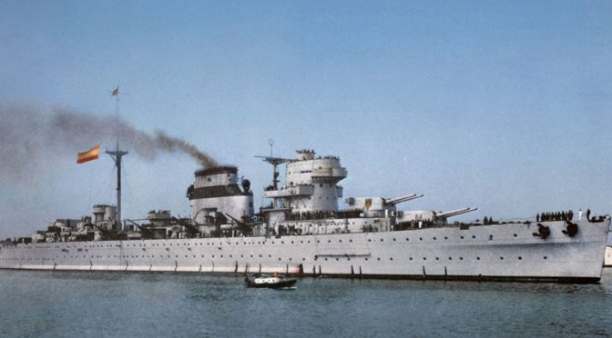
April 26, 1937
The bombing of Guernica. The raid was mostly on attack of the civilians, rather than to destroy some military power. It resulted in destruction for the whole town
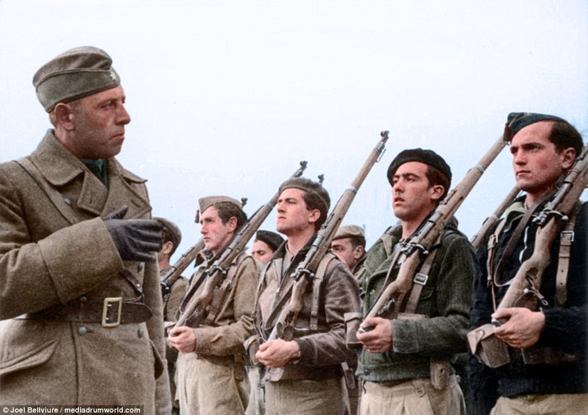
May 17, 1937
Negrín becomes the new republican Prime Minister, replacing Francisco Largo Caballero. His government contains more communists than Caballero's one
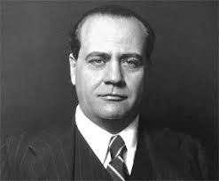
April 15, 1938
Catalonia is cut off from the Republicans. Nationalists groups take all of the mediterranean area
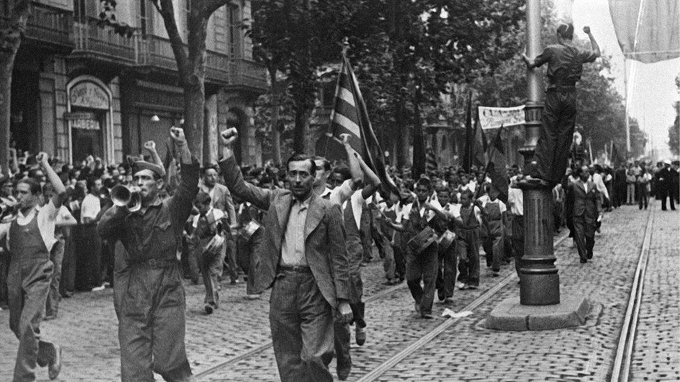
January 26, 1939
Nationalist forces enter Barcelona. They started the offensive on December 23, 1938 and rapidly conquered Barcelona
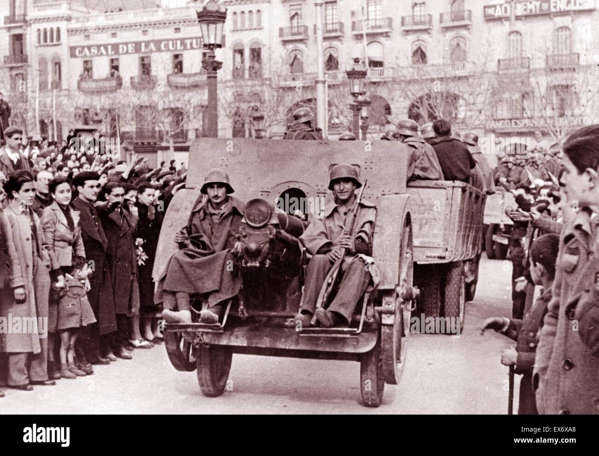
February 10, 1939
The fall of Catalonia was complete, and the Nationalists conquered all of Catalonia. Thousands of refugees fled to France, then being killed by the Nazis
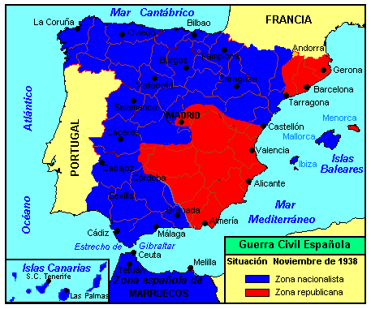
March 28, 1939
The fall of Madrid. Madrid is finally taken by the Nationalists, making the republicans surrender
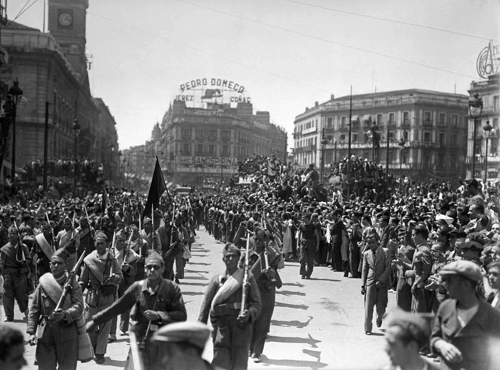